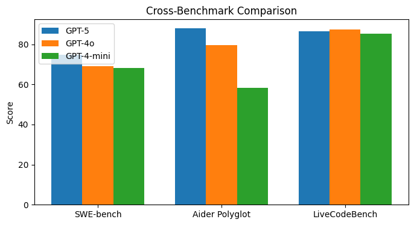
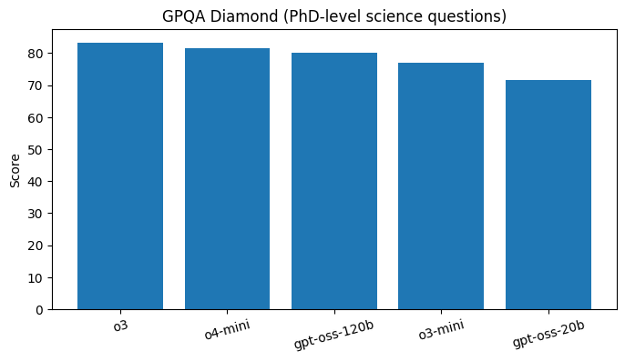

This benchmark measures a model’s ability to resolve real bug reports in open‑source repositories.
| Model | Resolved (%) |
|---|---|
| GPT‑5 | 74.9 |
| GPT‑4o | 69.1 |
| GPT‑4‑mini | 68.1 |
| Claude 3.5 Sonnet | 49.0 |
| SWE‑agent‑LM‑32B | 40.2 |
| OpenHands LM 32B | 37.2 |
Data sources: summarised from SWE‑bench leaderboards.
Numbers summarised from SWE‑bench leaderboards.
Aider Polyglot evaluates models’ ability to edit code across different languages by applying diffs to repositories.
| Model | Success (%) |
|---|---|
| GPT‑5 | 88.0 |
| GPT‑4o | 79.6 |
| GPT‑4‑mini | 58.2 |
Reported by OpenAI’s Aider Polyglot evaluation.
Aider Polyglot diff‑mode results.
LiveCodeBench measures coding ability by solving competitive programming tasks under resource constraints.
| Model | Pass@1 (%) |
|---|---|
| GPT‑5 mini | 86.6 |
| GPT‑4o | 87.5 |
| GPT‑4‑mini | 85.2 |
Results compiled from public LiveCodeBench leaderboards and Kaggle runs.
LiveCodeBench pass@1 scores summarised from community runs.
To better visualise how models perform across different evaluation suites, the following chart compares GPT‑5, GPT‑4o and GPT‑4‑mini on three core benchmarks.
Scores aggregated from SWE‑bench Verified, Aider Polyglot and LiveCodeBench leaderboards.
The GPQA Diamond benchmark tests models’ ability to answer graduate‑level science questions without tools. OpenAI’s open‑weight models hold their own against proprietary systems.
GPQA results from Simon Willison’s analysis of OpenAI’s gpt‑oss release.